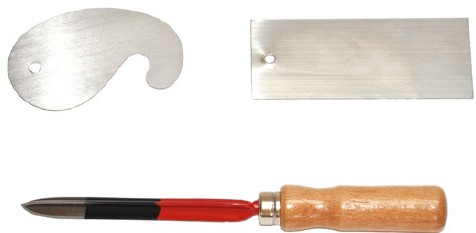
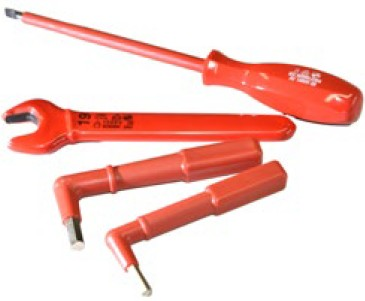
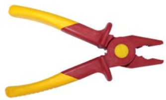
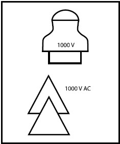
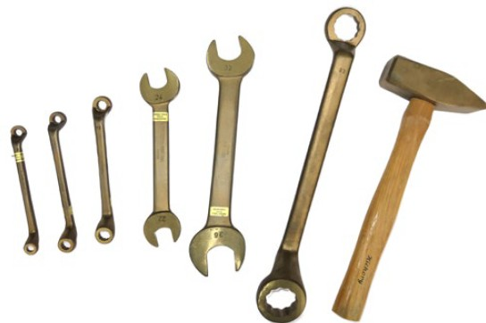

Ziehklingen und Schaber werden für die manuelle Oberflächenbearbeitung genutzt. Mit diesen Handwerkzeugen können sehr feine Nacharbeiten erfolgen (Abbildung 65, oben: Ziehklingen, unten: Dreikant Hohlschaber).

Abb. 65 Ziehklingen (oben) und Dreikant Hohlschaber (unten)
Ziehklingen werden oft für Holzoberflächen eingesetzt. Der feine Grat der Ziehklinge wirkt als Schneide spanabhebend. Mit den Ziehklingen können auf edlen Oberflächen Lackreste oder Schadstellen entfernt oder aufgearbeitet werden. Bei der Restaurierung alter Möbel und bei der Aufarbeitung von Intarsien wird das Werkzeug auch aktuell noch verwendet.
Ziehklingen haben keinen ausgebildeten Griff und das gewünschte Arbeitsergebnis wird über eine feinfühlige Bearbeitung mit der bloßen Hand erzielt. Da sich der Grat an dem Blech der Ziehklinge dabei schnell abnutzt, muss er häufig angeschliffen werden. Das Nacharbeiten eines Grats und die Arbeit mit diesem Werkzeug erfordern viel Erfahrung und Zeit. Da die Grate an Ziehklingen sehr scharf sind, sollte auf die möglichen Gefahren während der Arbeit mit Ziehklingen hingewiesen werden.
Die Norm DIN 7226 beschreibt eine Standardform und einen Standardwerkstoff der rechteckigen Ziehklinge mit scharfen Kanten. Neben der genormten rechteckigen Form von Ziehklingen gibt es viele weitere, die bei unterschiedlichen Holzprofilen angewendet werden können.
Schaber werden vor allem in Metallberufen eingesetzt. Mit ihnen können Bohrungen entgratet und Flächen gereinigt werden. Üblich ist das Entfernen von Anhaftungen alter Dichtungen auf Planflächen und Flanschen mit Flachschabern. Anders als die Ziehklingen haben Schaber einen Griff, vergleichbar mit denen von Feilen. Je nach Ausführung werden die scharfen Klingen der Schaber geschoben oder gezogen.
Im Gegensatz zu anderen Schabern verfügt der Dreikantschaber – neben den scharfen Klingen – noch über eine Spitze, was wiederum die Gefahren für Schnitt- und zusätzlich von Stichverletzungen erhöht. Schaber sollen zum Schutz der Oberflächen nicht mit hoher Kraft geführt werden. Für Auszubildende ist die Übung mit diesem Handwerkzeug deshalb sehr wichtig. Stehen in den Ausbildungsbetrieben Arbeiten mit Schabern an, sollte den Auszubildenden die Gelegenheit geboten werden, Erfahrung im Umgang mit Schabern zu sammeln.
Dreikant- und Flachschaber sind in der DIN 8350 beschrieben. Nach dieser Norm sind die Schaber im vorderen Bereich besonders gehärtet. Nachschleifen erfordert daher Erfahrung und Sorgfalt. Darüber hinaus gibt es viele weitere Schaber-Bauformen, teilweise auch mit wechselbarer Klinge.
| Infobox |
|
Handwerkzeuge, wie Schraubendreher, Zangen oder Schraubschlüssel, werden auch während der Arbeiten an elektischen Anlagen und Betriebsmitteln genutzt. In Bezug auf die besonderen Gefahren während der Arbeiten unter Spannung sind die Ausführungen im Abschnitt 2 dieser DGUV Information nicht ausreichend, denn für diese Aufgaben sind weitergehende Anforderungen an die Handwerkzeuge zu stellen.
In den DGUV Vorschriften 3 und 4 sind die Unfallverhütungsvorschriften "Elektrische Anlagen und Betriebsmittel" enthalten. Grundsätzlich darf an aktiven Teilen elektrischer Anlagen oder Betriebsmittel, nach § 6 DGUV Vorschrift 3 und 4 "Elektrische Anlagen und Betriebsmittel", nicht gearbeitet werden. Sind Arbeiten erforderlich und ein Freischalten nicht möglich, sind nach § 8 (2) der Vorschrift Werkzeuge zu verwenden, die eine Gefährdung der Körperdurchströmung oder der Lichtbogenbildung ausschließen (siehe hierzu auch: DGUV Vorschrift 3 und 4 DA "Durchführungsanweisungen Elektrische Anlagen und Betriebsmittel").
In der DGUV Vorschrift 3 wird in § 8 (2) auch gefordert, dass Unternehmende nur fachlich geeignete Personen mit Arbeiten an unter Spannung stehenden aktiven Teilen beauftragt.
Die Unfallverhütungsvorschrift: DGUV Vorschrift 4 "Elektrische Anlagen und Betriebsmittel" führt im § 5 ausführlicher zu Prüfungen aus, als die DGUV Vorschrift 3 in Verbindung mit der DGUV Vorschrift 3 DA. Deshalb sollte auch sie Beachtung finden.
Klärung in Bezug auf die Anforderungen für Arbeiten mit entsprechenden Gefährdungen sind in der DGUV Regel 103-011 "Arbeiten unter Spannung an elektrischen Anlagen" zu finden.
Während in dieser Norm drei Varianten von Werkzeugen unterschieden werden, sind in der DGUV Information 203-001 "Sicherheit bei Arbeiten an elektrischen Anlagen" zwei Varianten beschrieben:
Vollisolierte Handwerkzeuge (Abbildung 66):
Das sind Werkzeuge aus leitfähigem Werkstoff mit Isolierstoffüberzug. In diesem Zusammenhang dürfen an Maulschlüsseln nur die Stirnfläche, an Steckschlüsseln nur die Auflagefläche und an den übrigen Werkzeugen nur der unmittelbar auf das zu bearbeitende Werkstück einwirkende Teil ohne Isolierung sein, zum Beispiel der Abtrieb des Schraubendrehers.

Abb. 66 Beispiele für vollisoliertes Werkzeug
Teilisolierte Handwerkzeuge:
Das sind Werkzeuge, bei denen anwendungsbedingt größere Flächen blank sind, zum Beispiel der Kopf einer Kombizange. Diese Werkzeuge sind weniger sicher. Bevorzugen Sie daher stets vollisoliertes Werkzeug.
In der DIN EN 60900 (VDE 0682-201) Norm sind auch isolierende Handwerkzeuge genannt. Sie sind vollständig oder zu einem wesentlichen Teil aus Isolierstoff(en) hergestellt (Abbildung 67). Sie dürfen Einsätze aus leitfähigem Material zur Verstärkung haben, jedoch keine freiliegenden leitfähigen Teile. Diese Werkzeuge bieten den besten Schutz, haben aber meistens eine geringere Festigkeit als voll- und teilisolierte Handwerkzeuge.

Abb. 67 Beispiel für eine isolierende Kombizange nach DIN EN 60900
Das Symbol eines Isolators oder des Doppeldreiecks und die zugeordneten Spannungs- oder Spannungsbereichsangabe geben den Hinweis, dass es ein Handwerkzeug zum Arbeiten an unter Spannung stehenden Teilen ist (Abbildung 68).

Abb. 68 Isolator Symbol und Doppeldreieck
Das Isolator-Symbol ist heute nicht mehr gebräuchlich, aber Handwerkzeuge mit dieser Kennzeichnung werden noch verwendet.
Die alleinige Kennzeichnung des Handwerkzeugs mit "1000 V" ist nicht ausreichend. Benutzen sie deshalb für Arbeiten unter Spannung nur solche Handwerkzeuge, die mit einer Kennzeichnung versehen sind, bestehend aus Spannungsangabe, Doppeldreieck und Normnummer (bei älteren Werkzeugen Isolator-Symbol und Spannungsangabe).
Da die Sicherheit dieser Werkzeuge durch die Isolierung geboten wird, muss besonders auf Beschädigungen wie Abrieb oder Risse der Isolierung geachtet werden. Deshalb sind Handwerkzeuge für Arbeiten unter Spannung von den Beschäftigten vor jeder Benutzung auf augenfällige Mängel zu prüfen. Manche Herstellfirmen verwenden unter der oberen Isolierschicht (in der Regel rot) Isolierstoff aus einer Kontrastfarbe (in der Regel gelb). Damit sind Beschädigungen der oberen Schicht leicht zu erkennen.
Besonders die isolierenden Handwerkzeuge sollten aufgrund ihrer Empfindlichkeit geschützt aufbewahrt und transportiert werden.
Um Verwechslungen auszuschließen, sollten Handwerkzeuge für Arbeiten an elektrischen Anlagen getrennt von denen aufbewahrt werden, die diesen Schutz nicht bieten.
| Infobox |
|
Für Arbeiten in Bereichen, in denen explosionsfähige Atmosphären auftreten können, dürfen nur Arbeitsmittel benutzt werden, die für das in diesen Bereichen herrschende Gefahrenpotential zugelassen sind. In der Gefahrstoffverordnung (GefStoffV) werden Vorgaben genannt, die den Schutz von Menschen und Umwelt vor stoffbedingten Schädigungen zum Ziel haben. Über die Gefährdungsbeurteilung müssen Arbeitgebende nach dieser Verordnung auch ermitteln, ob in dem Bereich der Tätigkeiten Brand- oder Explosionsgefährdungen vorliegen und als Folge nur bestimmte Arbeitsmittel genutzt werden dürfen.
In der DGUV Regel 113-001 "Explosionsschutz-Regel (EX-RL)" sind technische Regeln für das Vermeiden der Gefahren durch explosionsfähige Atmosphären gesammelt. Sowohl in der GefStoffV als auch in dieser Regel finden sich Erläuterungen zur Zoneneinteilung in explosionsgefährdeten Bereichen. Die Zoneneinteilungen 0, 1 und 2 werden für Atmosphären aus Luft und brennbaren Gasen, Nebel oder Dämpfen (Flüssigkeiten) aufgeführt. Für Atmosphären, die aus einer Wolke brennbaren Staubs in der Luft bestehen, sind die Zonen 20, 21 und 22 definiert.
Gefährdungen in den Bereichen sind zum einen in die Gefährdungsbeurteilung aufzunehmen und ebenso in einem Explosionsschutzdokument zu benennen. Aus dieser Dokumentation geht dann die Zone hervor, in der eine Tätigkeit erfolgen soll und es kann daraus auf zugelassene Arbeitsmittel und Arbeitsverfahren geschlossen werden. In der DGUV Information 213-106 "Explosionsschutzdokument" finden Sie entsprechende Hinweise und Informationen.
Eine konkrete Gefahr besteht immer dann, wenn ein brennbarer Stoff, eine explosionsfähige Atmosphäre und ein oxidierender Stoff (wie der Sauerstoff in der Luft) durch eine Zündquelle in Reaktion gebracht werden. Maßnahmen, diese Gefahren zu vermeiden, wären das Verhindern einer explosionsfähigen Atmosphäre, das Entfernen brennbarer Stoffe und das Vermeiden von Zündquellen.
Handwerkzeuge könnten während ihrer Nutzung funkenreißende Wirkung haben. Durch Schlageinwirkungen oder Reibung während des Einsatzes von Handwerkzeugen könnten aber nicht nur Funken, sondern auch Wärme mit ausreichender Energie entstehen, um als Zündquelle geeignet zu sein. Deshalb dürfen in diesen Gefahrenbereichen häufig nur Handwerkzeuge verwendet werden, bei denen Funkenbildung weitgehend ausgeschlossen werden kann. Dieser Fall kann eintreten, wenn zum Beispiel Reinigungsarbeiten in Lackierereien ausgeführt, anhaftende Farbablagerungen abgelöst werden oder wenn mit leichtentzündlichen Flüssigkeiten und Stoffen gearbeitet wird, wie Benzol, Benzin, Äther, oder beim Abfüllen und Reinigen von Behältern.
Liegen entsprechende Gefahren vor, werden Holz-, Gummi- oder Bleihämmer sowie Schraubenschlüssel, Schraubendreher, Zangen, Schaber aus Bronze und aus Legierungen mit ähnlichen Eigenschaften verwendet.
In der Technischen Regel für Gefahrstoffe TRGS 723 "Gefährliche explosionsfähige Gemische – Vermeidung der Entzündung gefährlicher explosionsfähiger Gemische" werden Anforderungen der Gefahrstoffverordnung konkretisiert. Im Abschnitt 5.15 finden Sie Hinweise in Bezug auf Schutzmaßnahmen zu Reib-, Schlag- und Abriebvorgängen beim Einsatz von Werkzeugen.
Eine der Maßnahmen ist demnach die Verwendung von sogenanntem funkenarmem Werkzeug aus Beryllium-Kupfer-Legierung (Abbildung 69). Handwerkzeuge aus diesen Legierungen sind härter, als zum Beispiel die aus Holz, und daher für einige Anforderungen besser geeignet.

Abb. 69 Beispiele für funkenarme Werkzeuge
Die Beschreibung "funkenarm" berücksichtigt, dass auch während der Nutzung dieser Handwerkzeuge zündfähige Funken entstehen können: Beim Zusammenwirken von Handwerkzeug und zu bearbeitendem Werkstück werden auftretende Reibungs- und Schlagenergie zum Teil in Wärme(energie) umgewandelt. Befinden sich brennbare Stäube in der Nähe, können sie sich entzünden und zur Zündquelle mit ausreichender Energie werden. Während der Arbeit in explosionsfähiger Atmosphäre ist deshalb zu berücksichtigen, dass nicht nur das Handwerkzeug eine mögliche Funkenbildung wesentlich beeinflusst, sondern auch:
Es wird daher empfohlen, bei funkenarmen Handwerkszeugen stets den geringsten Härtegrad zu wählen, der für die Arbeit gerade noch ausreicht.
| Infobox |
|